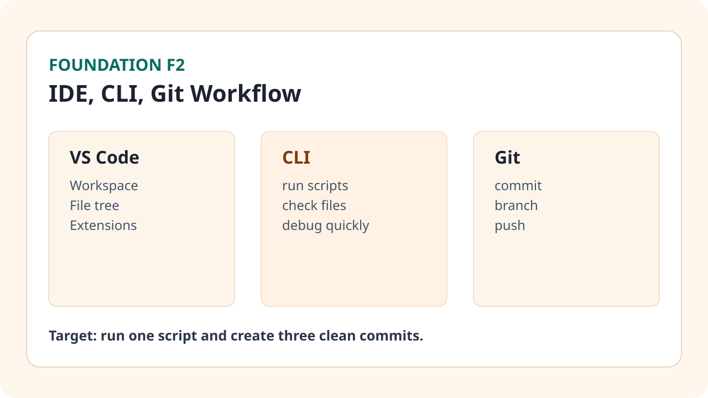

Business Situation

Concepts You Need
- IDE: môi trường làm việc với code và file dự án (ở đây dùng VS Code).
- CLI: giao diện dòng lệnh để chạy script, kiểm tra file, quản lý dự án.
- Git: hệ thống quản lý phiên bản, giúp theo dõi thay đổi và làm việc nhóm.
- Commit message: ghi rõ intent thay đổi để review nhanh.
How Team Does This in Real Life
- Mọi request được ghi thành issue/task trước khi sửa code.
- Người thực thi tạo branch riêng, chạy thử local, sau đó commit theo mốc logic.
- Reviewer đọc diff qua commit history, không xem kiểu "đụng đâu sửa đó".
- Sau khi merge, team kiểm tra lại dashboard KPI để đảm bảo không hồi quy.
Step-by-Step Workflow
- Khởi tạo workspace trong VS Code và mở terminal tích hợp.
- Clone repo hoặc tạo repo mới, thêm README chuẩn mục tiêu.
- Chạy script Python từ CLI và xác nhận output.
- Sửa một thay đổi nhỏ, commit theo thông điệp chuẩn.
- Push lên GitHub, kiểm tra history có logic rõ ràng.
- Lặp lại 3 vòng commit cho 3 thay đổi khác nhau.
Mini Case + Numbers
| Tác vụ | Trước (ad-hoc) | Sau (IDE/CLI/Git chuẩn) |
|---|---|---|
| Sửa script report | 50 phút + dễ lỗi | 22 phút + có log thay đổi |
| Tìm nguyên nhân KPI lệch | khó truy vết | truy vết qua commit trong 8 phút |
| Handover cho team | thiếu context | đủ context qua README + commit |
Kết luận: flow IDE/CLI/Git giúp bạn làm việc có cấu trúc và giảm friction khi cộng tác.
Hands-on Task (45-90 phút)
- Tạo repo `marketing-tech-lab` với README mô tả mục tiêu automation.
- Chạy 1 script bằng CLI, chụp output thành công.
- Tạo 3 commit: `feat`, `fix`, `docs` theo format rõ ràng.
Artifact to Submit
- Link repo GitHub.
- README có mục tiêu, cách chạy, output mong đợi.
- Ảnh commit history gồm ít nhất 3 commit chuẩn.
KPI / Completion Rubric
| Mức | Tiêu chí |
|---|---|
| Mức 0 | Chưa chạy được script bằng CLI. |
| Mức 1 | Chạy được script nhưng commit chưa rõ ràng. |
| Mức 2 | Có 3 commit đúng chuẩn + README đủ dùng. |
| Mức 3 | Repo có cấu trúc rõ và handover được cho người khác. |
Common Failure Patterns
- Commit nhiều thay đổi không liên quan trong cùng một lần.
- Message commit chung chung kiểu "update" hoặc "fix".
- Chạy script mà không pin rõ file input/output.
Prompt Pack
Build prompt: "Hãy đề xuất cấu trúc repo tối thiểu cho marketing automation script với README rõ cách chạy."
Debug prompt: "Lệnh CLI này lỗi. Đây là command, output lỗi, và cấu trúc thư mục. Hãy chỉ ra bước sửa ngắn nhất."
Review prompt: "Review commit messages này theo chuẩn team: rõ scope, action, outcome."
Tooling Notes (IDE/CLI/tool pros-cons)
- VS Code: mạnh ở search/refactor cơ bản, nhưng cần giữ workspace gọn để đỡ rối.
- GitHub Desktop: dễ dùng cho người mới, nhưng nên hiểu thêm CLI để xử lý tình huống khó.
- CLI Git: linh hoạt và nhanh, nhưng cần luyện command cơ bản đều tay.
Optional Upgrade (low-code path)
- Tạo branch theo ticket và mở PR mô phỏng để luyện flow review.
- Thêm `requirements.txt` và `run.sh` để chuẩn hóa môi trường chạy.
Đánh dấu tiến độ
Module này chưa hoàn thành
Đã hoàn thành Foundation 2